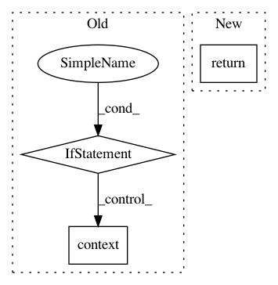

5d3f470b721db2a23dcc1a3880c1e31216e06233,python/dgl/batched_graph.py,,_max_on,#Any#Any#Any#,730
Before Change
max_readout_list = []
first = 0
for num_obj in batch_num_objs:
if num_obj == 0:
max_readout_list.append(F.zeros(F.shape(feat)[1:],
F.dtype(feat),
F.context(feat)))
continue
max_readout_list.append(F.max(feat[first:first+num_obj], 0))
first += num_obj
return F.stack(max_readout_list, 0)
else:
After Change
if isinstance(graph, BatchedDGLGraph):
batch_num_objs = getattr(graph, batch_num_objs_attr)
feat = F.pad_packed_tensor(feat, batch_num_objs, -float("inf"))
return F.max(feat, 1)
else:
return F.max(feat, 0)
def _softmax_on(graph, typestr, feat):
In pattern: SUPERPATTERN
Frequency: 3
Non-data size: 3
Instances
Project Name: dmlc/dgl
Commit Name: 5d3f470b721db2a23dcc1a3880c1e31216e06233
Time: 2019-08-05
Author: expye@outlook.com
File Name: python/dgl/batched_graph.py
Class Name:
Method Name: _max_on
Project Name: tensorly/tensorly
Commit Name: 611c03b711a285d3cc2051969763b4c6fcd1a6a7
Time: 2020-09-30
Author: jean.kossaifi@gmail.com
File Name: tensorly/decomposition/candecomp_parafac.py
Class Name:
Method Name: initialize_kruskal
Project Name: tensorly/tensorly
Commit Name: 984130dd55ff3488ebfc4951ad4c3d8a88ed6793
Time: 2020-09-30
Author: jean.kossaifi@gmail.com
File Name: tensorly/decomposition/candecomp_parafac.py
Class Name:
Method Name: initialize_kruskal